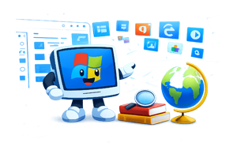

História do Logotipo do Windows
Provavelmente você sabe que o sistema operativo Windows, desenvolvido pela Microsoft, é um dos mais utilizados em computadores em todo o mundo. Mas talvez você não saiba que o seu logotipo passou por várias mudanças e possui uma história bastante interessante? Acompanhe este artigo e descubra curiosidades sobre um dos símbolos mais conhecidos da informática.
A primeira versão
A primeira versão do logotipo do Windows surgiu na década de 1980, quando a Microsoft ainda estava consolidando a sua presença no mercado. Na época, o símbolo era simples e lembrava uma janela com linhas retas e poucos detalhes. O objetivo era apenas representar graficamente a ideia de múltiplas janelas abertas na tela do computador.
Essa versão inicial não tinha grande apelo visual, mas cumpria bem sua função de identificar o sistema e transmitir a ideia de organização e produtividade.
Surge um novo visual
Com o crescimento do Windows e o aumento do número de utilizadores, surgiu a necessidade de modernizar o logotipo. A missão foi então atribuída a designers profissionais da Microsoft, que passaram a trabalhar em um símbolo mais moderno e visualmente atrativo.
A ideia principal era criar um logotipo simples, mas com cores vibrantes e fácil reconhecimento. Assim nasceu o famoso logotipo colorido, que ajudou a reforçar a identidade visual do Windows ao redor do mundo.
A principal inspiração para esse novo design foi a própria interface gráfica do sistema, que utilizava cores e elementos visuais amigáveis. O objetivo era transmitir inovação, acessibilidade e proximidade com o utilizador.
Então é isso! Espero que você tenha gostado do nosso artigo com essa curiosidade sobre o sistema Windows e a evolução do seu logotipo.